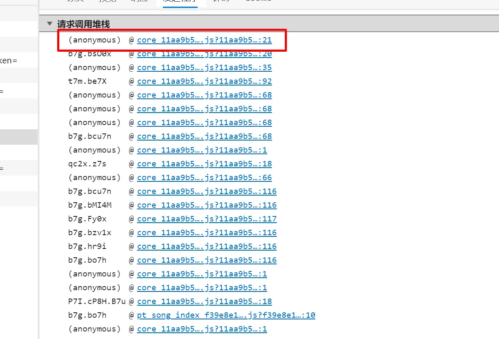
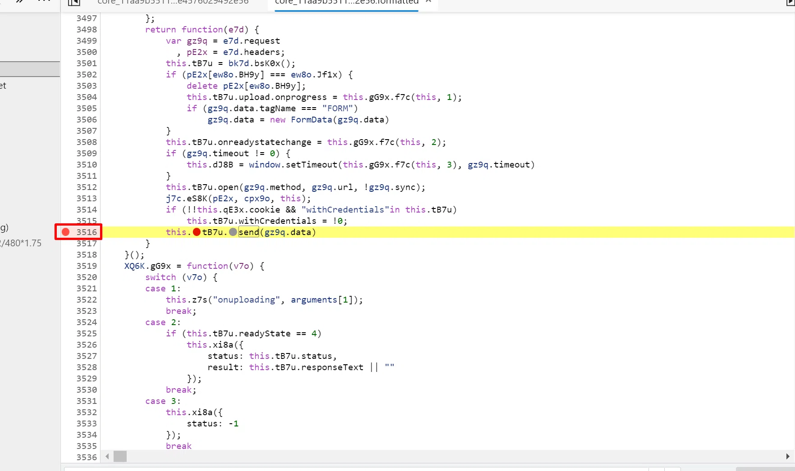
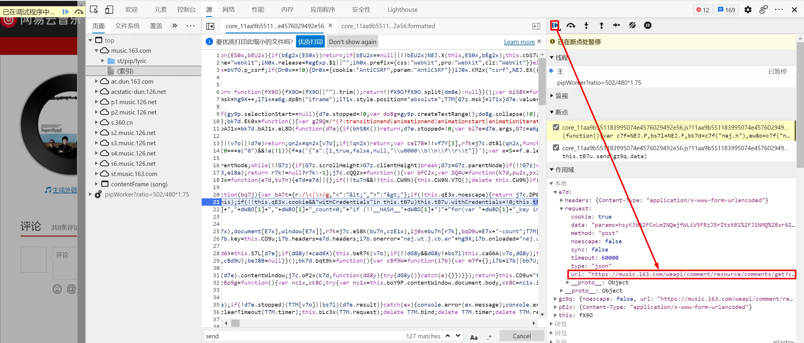
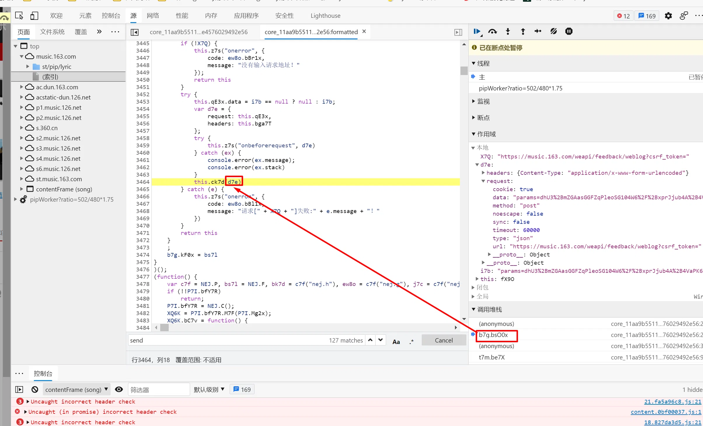
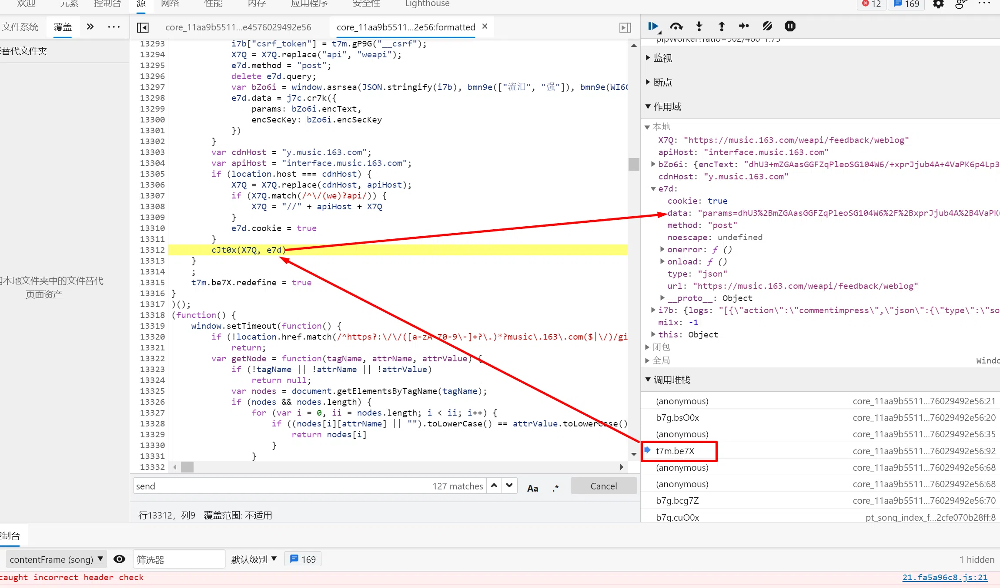
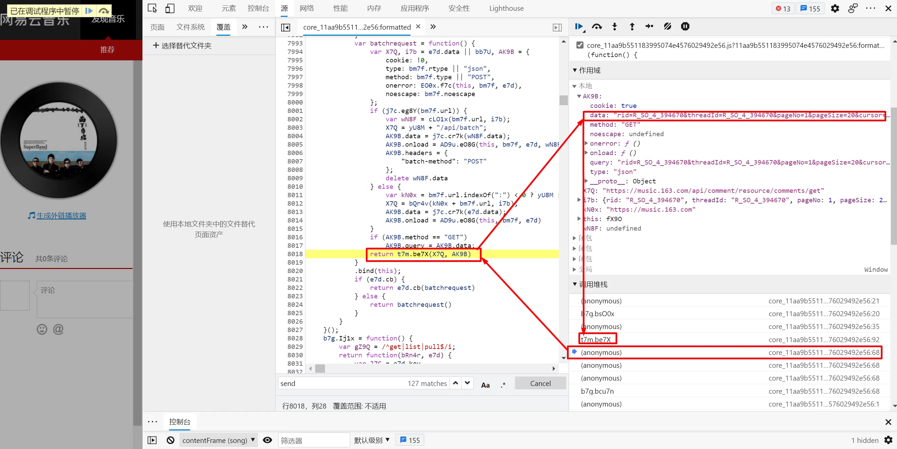
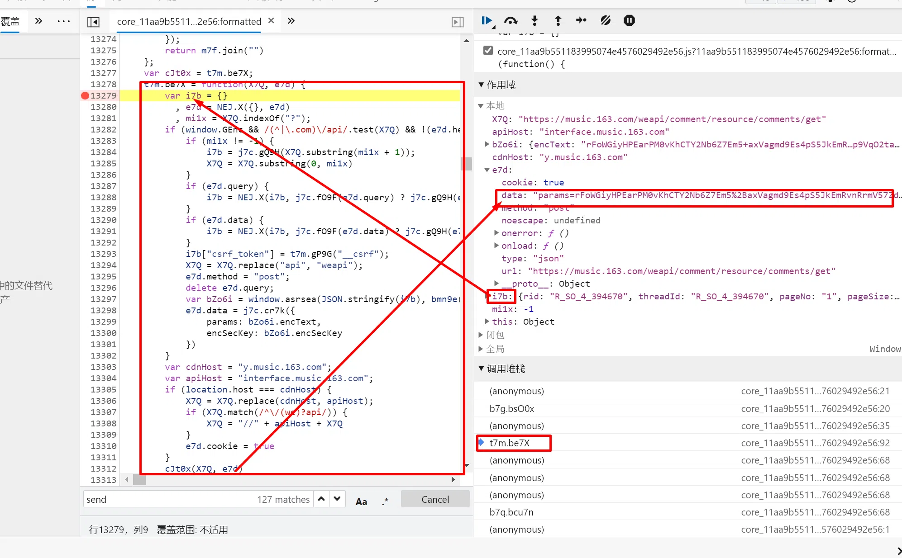

查看页面源代码，发现源代码中并不含有热评。通过工具抓包查看请求，数据是通过后端数据库请求过来的。

查看标头可以发现，这条获取热评的请求传递的参数是加密的。

首先，我们要找到未加密的参数。
通过查看请求程序，可以看到当前网页调用了那些JS脚本执行过程，从下往上调用。

查看最上面的JS脚本，这是产生请求的最后一个脚本，看看这个脚本里面有什么。

点开后，咋一看没法理解，这是经过压缩后的JS脚本，没关系，点击左下方的{}优质打印，就是格式化该脚本。

通过查看JS脚本，发现send函数，设置断点。

重新刷新页面，可以看到所有的变量，找到request中的url为/weapi/cdns?csrf_token=，不是我们想要的地址，继续刷新，

直到出现https://music.163.com/weapi/comment/resource/comments/get?csrf_token=，这就是我们想要的url。

从上图中可以看到，params参数是经过加密的，接着往上分析。

查看这里，d7e参数，查看这里的params依旧是加密的。接着往回找，是谁调用的b7g.bsO0x函数。

这里可以看到params参数依旧是加密的。

找到这里就可以看到params参数没有加密，说明加密过程就在 t7m.be7X函数中完成。

然后，把参数按照网易的规则进行加密处理，得到两个参数params和encSecKry。
最后，请求到网易，拿到评论信息。